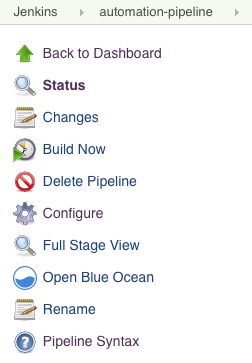

Jenkins 详细信息
Jenkins 插件的详细配置
容器提供了一种简单高效的方式来部署应用程序。但容器镜像可能包含您无法完全控制的开源代码。许多开源项目中的漏洞已被报告，您可以在扫描镜像并查看漏洞信息后决定是否使用这些存在漏洞的库。
SUSE® Security 漏洞扫描器 Jenkins 插件可以在您的镜像在 Jenkins 中构建后扫描这些镜像。插件源代码和最新文档可以在 这里 的 SUSE® Security GitHub 页面找到。
该插件支持两种扫描模式。第一种是 "控制器和扫描器" 模式。第二种是独立扫描器模式。您可以在项目配置页面选择扫描模式。默认情况下，它使用 "控制器和扫描器" 模式。
对于 "控制器和扫描器" 模式，您需要在网络中部署 SUSE® Security 控制器和扫描器。要扫描本地镜像（Jenkins 机器上的镜像），"控制器和扫描器" 需要安装在镜像所在的同一节点上。
对于独立扫描器模式，Docker 运行时必须安装在与 Jenkins 相同的主机上。此外，还需将 jenkins 用户添加到 docker 组。
sudo usermod -aG docker jenkinsJenkins 插件安装
首先，在浏览器中访问 Jenkins 搜索 SUSE® Security 插件。可以在以下位置找到：
→ 管理 Jenkins → 管理插件 → 可用 → 过滤 → 搜索 SUSE® Security Vulnerability Scanner →
选择它并点击`install without restart.`
如果您尚未在 Jenkins 服务器可访问的主机上部署 SUSE® Security 控制器和扫描器容器，请进行部署。如果需要，可以在与 Jenkins 相同的服务器上进行。记下运行控制器的主机的 IP 地址。注意：默认的 REST API 端口是 10443。此端口必须通过 Kubernetes 中的 Allinone 或控制器的服务暴露，或者在 Docker 运行或 compose 文件中进行端口映射（例如 - 10443:10443）。
此外，请确保有一个独立部署的 SUSE® Security 扫描器容器，并配置为连接到控制器（如果正在使用控制器）。
图像扫描有两种场景，本地扫描和注册表扫描。
-
本地图像扫描。如果您使用插件扫描本地图像（在推送到任何注册表之前），您可以在与控制器/扫描器相同的主机上进行扫描，或配置扫描器以访问远程主机上的 Docker 引擎。
-
注册表图像扫描。如果您使用插件扫描注册表图像（在推送到任何注册表之后，但作为 Jenkins 构建过程的一部分），SUSE® Security 扫描器可以安装在网络中任何与注册表、SUSE® Security 扫描器和 Jenkins 之间有连接的节点上。
Jenkins中的全局配置
安装插件后，在全局配置页面（Jenkins ‘Configure System’）中找到'`SUSE® Security Vulnerability Scanner’部分。输入SUSE® Security控制器的IP、端口、用户名和密码的值。您可以点击'`Test Connection’按钮来验证这些值。它将显示'`Connection Success’或错误信息。
超时分钟值将在输入的时间内终止构建步骤。默认值 0 表示不会发生超时。
点击'`Add Registry’以输入您将在项目中使用的注册表的值。如果您只扫描本地图像，则无需在此处添加注册表。
场景 1：本地图像扫描的全局配置示例

场景 2：注册表图像扫描的全局配置示例
对于全局注册表配置，请按照上述本地配置的说明，然后添加以下注册表详细信息。

独立扫描器
以独立模式运行 Jenkins 扫描是一种轻量级的方法，可以扫描管道中的图像漏洞。扫描器是动态调用的，无需安装控制器设置。这在将图像推送到注册表之前扫描图像时特别有用。它对同时运行的扫描任务数量没有限制。
为了在独立模式下运行漏洞扫描，Jenkins 插件需要将扫描器镜像拉取到代理运行的主机上，因此您需要在 SUSE® Security 插件配置页面中输入 SUSE® Security 扫描器注册表 URL、镜像仓库和凭据（如需要）。
扫描结果也可以提交给控制器，并用于准入控制功能。在这种情况下，您确实需要设置控制器，并在 SUSE® Security 插件配置页面中指定如何连接到控制器。
项目配置
在您的项目中，从“添加构建步骤”的下拉菜单中选择“SUSE® Security 漏洞扫描器”插件。如果您希望以独立扫描器模式进行扫描，请勾选“使用独立扫描器扫描”框。默认情况下，它使用“控制器和扫描器”模式进行扫描。
选择本地或您在全局配置中输入的注册表名称的昵称。输入要扫描的储存库和镜像标签名称。您可以选择 Jenkins 默认环境变量作为储存库或标签，例如 $JOB_NAME、$BUILD_TAG、$BUILD_NUMBER。输入高或中等数量的值，以及任何存在的漏洞名称，以使构建失败。
构建完成后，将生成一个 SUSE® Security 报告。它将显示扫描详细信息和错误（如果有的话）。
场景 1：本地配置示例

场景 2：注册表配置示例

Jenkins 管道
对于 Jenkins 管道项目，您可以直接编写自己的管道脚本，或者如果您是管道样式任务的新手，可以单击 ‘pipeline syntax’ 来生成脚本。

从下拉菜单中选择 SUSE® Security 漏洞扫描器，配置它，然后生成脚本。

将脚本复制到您的 Jenkins 任务脚本中。
方案 1:简单的本地管道脚本示例（插入到您的管道脚本中）：
...
stage('Scan local image') \{
neuvector registrySelection: 'Local', repository: 'your_username/your_image'
\}
...方案 2:简单的注册管道脚本示例（插入到您的管道脚本中）：
...
stage('Scan local image') \{
neuvector registrySelection: 'your_registry', repository: 'your_username/your_image'
\}
...
设置管道以构建大规模并行扫描
从NeuVector v5.4.3及更高版本开始，NeuVector漏洞扫描仪Jenkins插件v2.5及更高版本支持在使用API密钥模式时最多进行2000个并发扫描。对于早期版本的NeuVector，使用令牌模式时最大并发扫描限制为32。点击展开并查看下面的示例以获取示例管道配置。
使用令牌模式示例配置（插件v2.4及以下，或v2.5及更高）
pipeline {
agent any
environment {
REPO_NAME = 'your repo'
REGISTRY_SELECTION = 'your registry'
CONTROLLER = 'your controller'
MAX_CONCURRENT_SCANS = 32
}
stages {
stage('Parallel Vulnerability Scanning') {
steps {
script {
// There is a limit of 250 tags per list (by Jenkins)
TAGS_LIST_PART1 = ["your tags"...]
TAGS_LIST_PART2 = ["your tags"...]
TAGS_LIST_PART3 = ["your tags"...]
TAGS_LIST_PART4 = ["your tags"...]
TAGS_LIST_PART5 = ["your tags"...]...
def allTags = TAGS_LIST_PART1 + TAGS_LIST_PART2 + TAGS_LIST_PART3 + TAGS_LIST_PART4 + TAGS_LIST_PART5
def batches = allTags.collate(MAX_CONCURRENT_SCANS.toInteger()) // Ensure MAX_CONCURRENT_SCANS is an integer
def batchCounter = 1 for (batch in batches) {
stage("Batch ${batchCounter}") {
def scans = [:]
batch.each { tag ->
def currentTag = tag
scans["Scan ${currentTag}"] = {
stage("Scan ${currentTag}") {
neuvector(
controllerEndpointUrlSelection: CONTROLLER,
registrySelection: REGISTRY_SELECTION,
repository: REPO_NAME,
scanTimeout: 20,
tag: "${currentTag}"
)
echo "Scan for tag ${currentTag} complete"
}
}
}
parallel scans
}
batchCounter++
}
}
}
}
}
}使用API密钥模式（插件v2.5及更高）
pipeline {
agent any
environment {
REPO_NAME = 'your repo'
REGISTRY_SELECTION = 'your registry'
CONTROLLER = 'your controller'
}
stages {
stage('Parallel Vulnerability Scanning') {
steps {
script {
// There is a limit of 250 tags per list (by Jenkins)
TAGS_LIST_PART1 = ["your tags"...]
TAGS_LIST_PART2 = ["your tags"...]
TAGS_LIST_PART3 = ["your tags"...]
TAGS_LIST_PART4 = ["your tags"...]
TAGS_LIST_PART5 = ["your tags"...]...
def allTags = TAGS_LIST_PART1 + TAGS_LIST_PART2 + TAGS_LIST_PART3 + TAGS_LIST_PART4 + TAGS_LIST_PART5
def scans = [:]
allTags.each { tag ->
def currentTag = tag
scans["Scan ${currentTag}"] = {
stage("Scan ${currentTag}") {
neuvector(
controllerEndpointUrlSelection: CONTROLLER,
registrySelection: REGISTRY_SELECTION,
repository: REPO_NAME,
scanTimeout: 20,
tag: "${currentTag}"
)
echo "Scan for tag ${currentTag} complete"
}
}
}
parallel scans
}
}
}
}
}